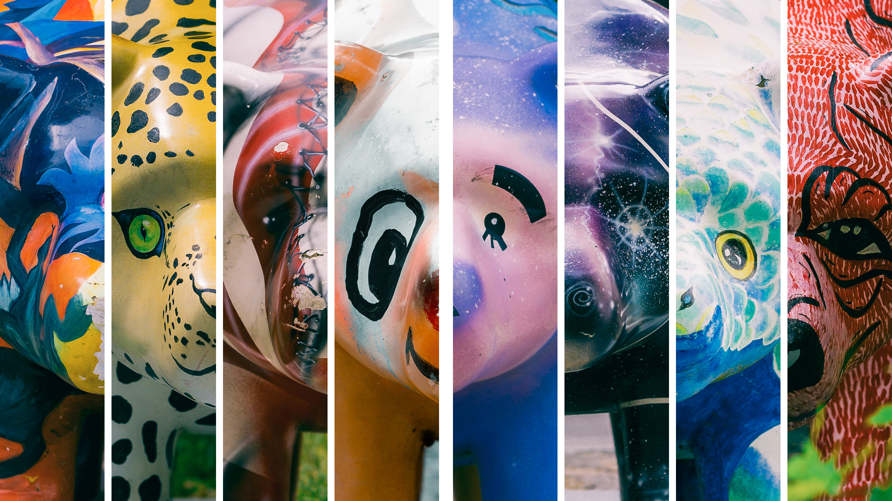
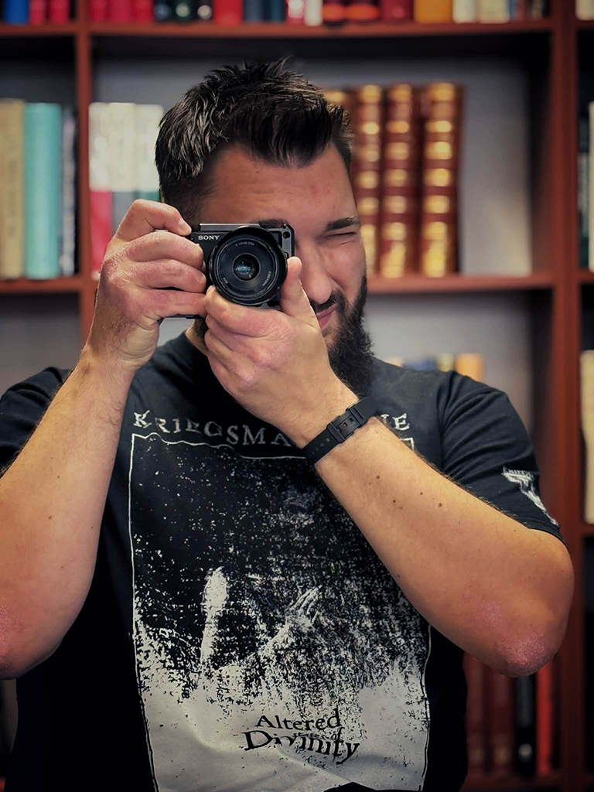

Niedźwiadki
Słupskie v2.0
Fotograficzne archiwum niedźwiadków, które od lat stają się częścią przestrzeni Słupska.
Poznaj niedźwiadki ↓
Niedźwiadki
Każdy z nich ma własny wygląd, historię i miejsce w Słupsku.
Mapa
Znajdź wszystkie niedźwiadki w przestrzeni Słupska.
Galeria
Niedźwiadki Słupskie v2.0 — fotograficzne kolaże. Kliknij wybraną fotografię, aby zobaczyć ją w pełnym rozmiarze.
O projekcie
Próba stworzenia kompletnego fotograficznego archiwum Słupskich Niedźwiadków Szczęścia.
Projekt dokumentuje niedźwiadki znajdujące się w przestrzeni miasta, ich historię, autorów, lokalizacje oraz okoliczności powstania. Projekt będzie rozwijany z czasem, nie jest to ostateczna wersja.

O mnie
Mikołaj Żytkiewicz — nauczyciel, fotograf i autor projektu Niedźwiadki Słupskie v2.0.
Z zawodu jestem nauczycielem języka angielskiego oraz przedmiotów zawodowych w branży grafiki i poligrafii cyfrowej w Zespole Szkół Ekonomicznych im. Stanisława Staszica w Słupsku oraz Zespole Szkół Mechanicznych i Logistycznych im. Tadeusza Tańskiego w Słupsku.
W wolnych chwilach — których zbyt wiele nie ma — zajmuję się fotografią, motoryzacją oraz szeroko pojętą informatyką, w tym sztuczną inteligencją.
Projekt Niedźwiadki Słupskie v2.0 powstał właściwie przypadkiem. Podczas jubileuszu 80-lecia Ekonomika nasza szkoła miała otrzymać własnego niedźwiadka. Z ciekawości zacząłem szukać fotografii pozostałych figurek i ze zdziwieniem odkryłem, że w Internecie trudno znaleźć na ich temat kompletne informacje.
Chwyciłem więc za aparat i wyruszyłem w miasto — jak się później okazało, kilkukrotnie. Tak rozpoczęło się tworzenie fotograficznego archiwum słupskich Niedźwiadków Szczęścia.
Mam jeszcze wiele pomysłów na rozwój projektu. Z czasem chciałbym go uzupełniać między innymi o kolejne materiały oraz rozmowy z osobami odpowiedzialnymi za powstanie poszczególnych niedźwiadków.
Kontakt
Wiesz coś o słupskich niedźwiadkach?
Masz informacje, których brakuje na stronie? Znasz historię któregoś z niedźwiadków, posiadasz archiwalne fotografie albo zauważyłeś błąd? Napisz do mnie.